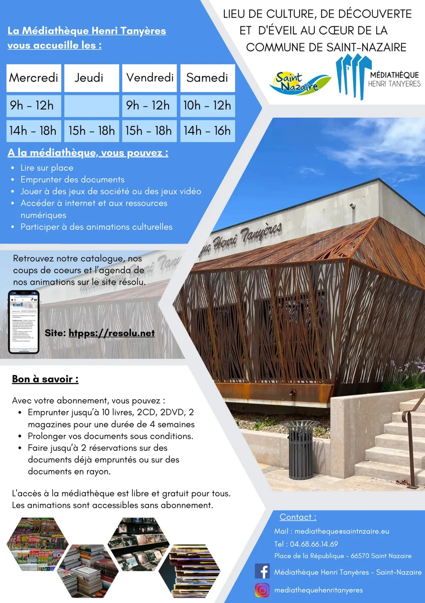
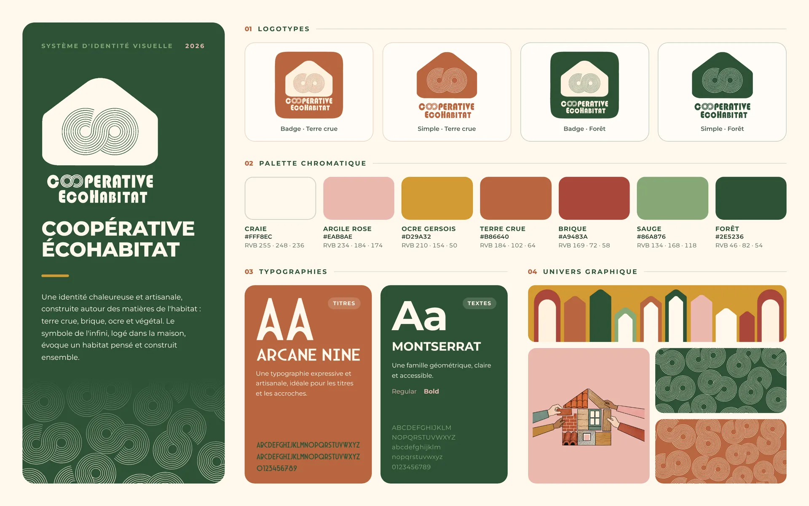
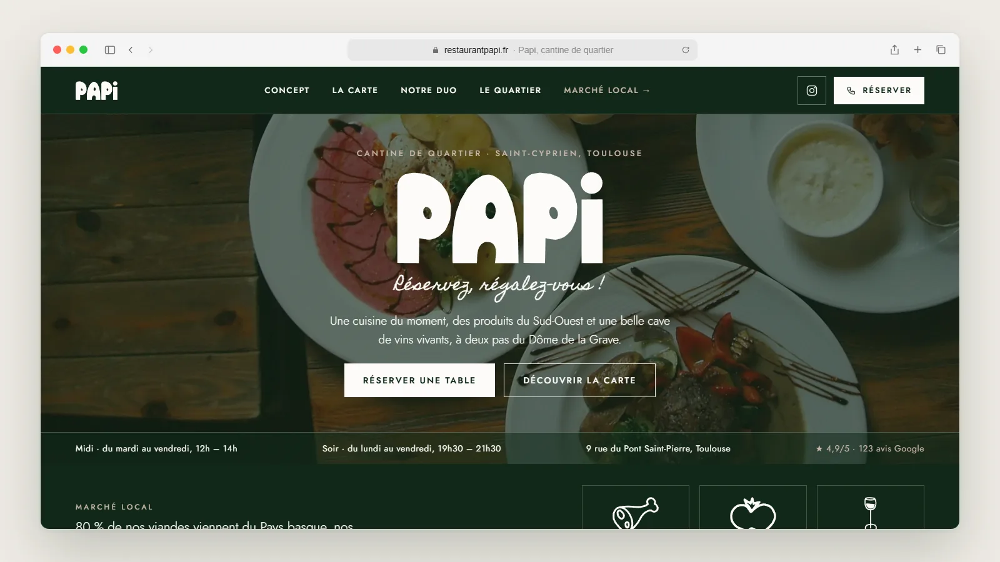

Ce que je peux faire pour votre communication.
Six services, une seule personne pour les suivre : de la stratégie à la création, pour les entreprises, associations et institutions.


Graphisme
Des supports qui donnent envie de lire, prêts à imprimer ou à diffuser.
- Print : affiches, flyers, dépliants, brochures, kakémonos
- Édition : catalogues, rapports, cartes de visite, CV
- Mise en page : documents, ebooks, mémoires
- Fichiers : prêts pour l'impression et le digital
Réalisations : Le Trait d'Union, Médiathèque de Saint-Nazaire, Zeste & Miette, Festival SOUND

Identité visuelle
Une image reconnaissable, utilisée de la même façon partout.
- Création : logo, couleurs, typographies, direction artistique
- Reprise : vectorisation de logo existant
- Cadre : charte graphique, règles d'utilisation
- Déclinaisons : sur tous vos supports
Réalisations : Zeste & Miette, Festival SOUND

Réseaux sociaux
Des réseaux actifs et cohérents, sans y passer vos soirées.
- Stratégie : audit digital, choix des réseaux, ligne éditoriale, calendrier
- Création : posts, carrousels, stories, vidéos courtes, templates
- Animation : programmation, modération
- Publicité : campagnes Ads
- Analyse : performances des publications, bilan
Réalisations : Handi Tolosa, Zeste & Miette, La Place des Matériaux

Sites web
Un site clair, à jour et que vous savez faire vivre.
- Conception : arborescence, maquettes
- Réalisation : site vitrine, portfolio, WordPress, pages de campagne, formulaires
- Optimisation : responsive sur Divi ou Elementor
- Audit : audit web, audit SEO
- Suivi : actualités, mise à jour des contenus
Réalisations : La Coopérative ÉcoHabitat, Groenland, Papi Restaurant

ma spécialité
Campagne de financement
Une campagne préparée, visible et animée jusqu'au dernier jour.
- Préparation : benchmark, page dédiée à la campagne
- Création : graphisme, visuels pour tous vos supports
- Diffusion : communication sur tous vos canaux, alimentation des réseaux sociaux
- Animation : banque d'idées tout au long de la campagne
Réalisation : La Place des Matériaux

Montage vidéo
Des vidéos rythmées, pensées pour être regardées jusqu'au bout.
- Formats : vidéos verticales pour TikTok, YouTube Shorts, Reels
- Montage : cut rythmé, fond vert, sous-titres, musique et effets sonores
- Animation : motion design, animation de vidéo
Réalisations : mon CV vidéo en motion design, Défi de montage YouTube
Un projet en tête ?
Le premier échange est gratuit et sans engagement. On parle de votre projet, puis je vous envoie un devis clair : contenu, délais, prix.